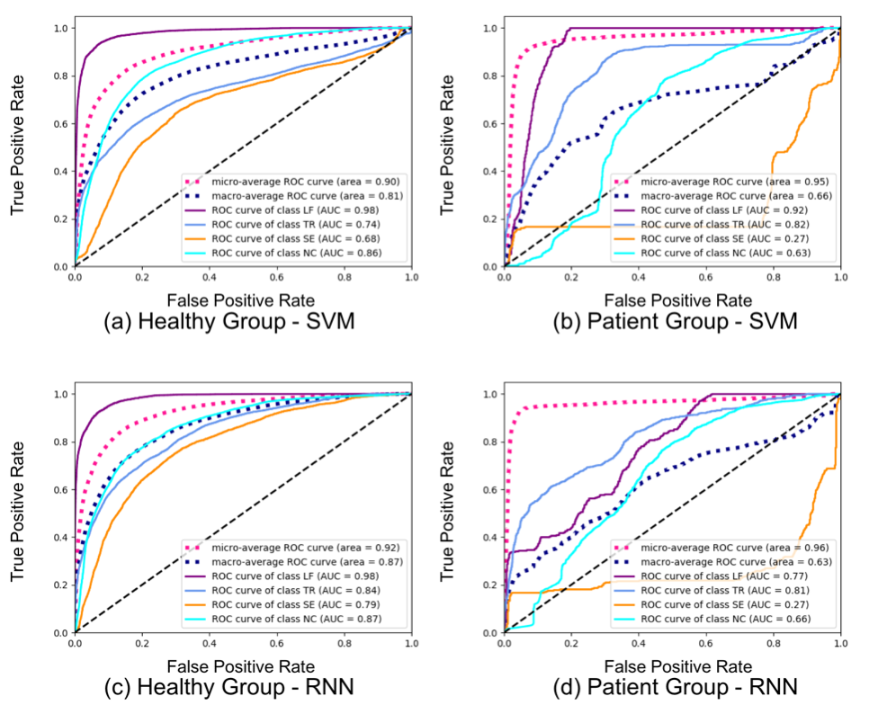

Detecting Compensatory Motion in Robotic Stroke Rehab
(The clip shows a participant maneuvering the robot as part of a scripted stroke rehab exercise)
Robotic stroke therapy can greatly increase the efficiency of therapy delivery. However, when left unsupervised, users often compensate for limitations in affected muscles and joints by recruiting unaffected muscles and joints, leading to undesirable rehabilitation outcome.
We aimed to detect such compensatory motions with a computer vision system based on Microsoft Kinect. We recorded the upper-limb motions of nine stroke survivors and ten healthy adults during robotic stroke exercises.
The 3-D joint positions were extracted to train and test two supervised classification models (SVM and RNN). The ROC plots are shown below:

For healthy participants, the SVM detected exhibited moderate accuracy in detecting compensations. The RNN obtained similar results. In contrast, classification performance was poort for stroke survivors using either classifier. To improve detection accuracy for stroke survivors, future work should focus on pre-defining the range of motion, direct camera placement, reducing the robotic arm height, and recording full therapy sessions.
The journal paper is currently under review by IEEE Journal of Translational Engineering in Health and Medicine.
- Motion tracking: Microsoft Kinect v2, OpenCV, Kinect Studio
- Data Processing: Python, MATLAB
- Machine Learning: Scikit-learn, Keras, TensorFlow
Collaborators: Babak Taati, Elham Dolatabadi, Michelle Lukasik